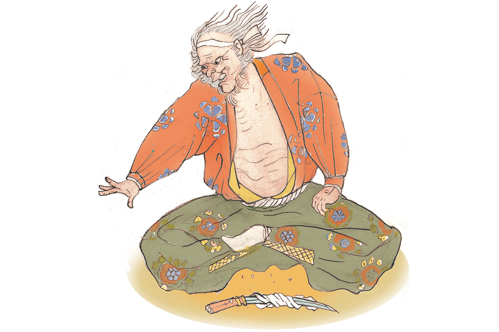

Префектура Нара · гора Сиги · полководцы Японии
Хисахидэ Мацунага: полководец, который сжёг зал Великого Будды и трижды предал Нобунагу

С конца XV до конца XVI века Япония жила в непрерывной войне. Власть сёгунов рухнула, и по всей стране поднялись местные князья. Даже среди них Хисахидэ Мацунага выделяется дурной славой: он сжёг зал Великого Будды в Наре и трижды предал своего господина.
Эпоха
Время воюющих провинций
С конца XV до конца XVI века сёгунат Муромати окончательно потерял власть. Прежних наместников провинций оттеснили военные князья, даймё, и каждый из них силой расширял свои земли. Эту эпоху называют Сэнгоку, «эпохой воюющих провинций», и её полководцы до сих пор остаются героями легенд, книг и фильмов.
Хисахидэ Мацунага прожил примерно с 1510 по 1577 год. Где он родился, точно не известно. Обычно его связывают с провинцией Ямасиро, югом нынешней префектуры Киото, но есть версии и о других провинциях. Позже он взял себе второе имя, Дои. Его главной женой была дочь Нагаёси Миёси (1522–1564), полководца, который в середине XVI века держал в руках Киото и окрестные земли.
Карьера
От писаря до хозяина провинции Ямато
Начинал Хисахидэ скромно: в 1540 году он поступил на службу к Нагаёси Миёси писарем. В 1549 году Миёси изгнал сёгуна Ёситэру Асикагу (1536–1565) и взял власть в столице. Хисахидэ последовал за ним в Киото, стал управляющим дома Миёси и получил придворную должность.
В 1559 году он перенёс свою ставку в замок на горе Сиги, на западе провинции Ямато, нынешней префектуры Нара. В 1560 году Хисахидэ одолел войска храма Кофукудзи, самого могущественного храма Нары, объединил под своей властью всю Ямато и получил высокий придворный ранг. В 1562 году он воевал под Киото с родом Роккаку и разбил их союзника, правителя соседней провинции Кавати, изгнав его на юг.

Хисахидэ метил в хозяева всех земель вокруг столицы. В 1565 году он напал на сёгуна Ёситэру Асикагу, тринадцатого сёгуна династии, и погубил его, а заодно выслал из Киото христианских миссионеров. В 1567 году он победил в битве у храма Тодайдзи, и в этом бою сгорел зал Великого Будды. Эта победа открыла ему дорогу к власти над всей областью.
Измены
Три предательства Нобунаги
В 1568 году Хисахидэ поступил на службу к Нобунаге Оде (1534–1582), полководцу, который начал объединять Японию. Он воевал рядом с Нобунагой и ходил с ним в поход на князя Ёсикагэ Асакуру (1533–1573), но снова и снова поднимал мятежи. В 1572 году он восстал и почти сразу сдался. Нобунага каждый раз его прощал: видимо, всё же ценил его способности.
Последний мятеж Хисахидэ поднял в 1577 году. Нобунага тогда осаждал Исияма Хонган-дзи, храм-крепость буддийской школы Дзёдо-синсю на месте нынешней Осаки, и Хисахидэ ударил ему в спину. Он заперся в замке на горе Сиги, но проиграл.
Финал
Чайник «Хирагумо»
У Хисахидэ была любимая вещь: чайный котёл «Хирагумо», «Плоский паук». Нобунага не раз просил отдать его, но Хисахидэ так и не согласился. Перед смертью, по преданию, он сказал:
«Ни котла „Хирагумо“, ни своей головы я тебе не покажу. Котёл я разобью вдребезги»
слова, приписываемые Хисахидэ Мацунаге
Он начинил драгоценный котёл порохом и погиб в замке на горе Сиги вместе с ним. Жизнь Хисахидэ была бурной до самого конца. При этом, как говорят, жители его земель его поддерживали: у человека, которого принято считать злодеем, была и другая сторона.
Где увидеть
Замок на горе Сиги
От замка, где Хисахидэ жил с 1559 года и где погиб в 1577-м, остались руины на горе Сиги в городке Хэгури, на западе префектуры Нара. Укрепления занимали вершину горы, а на её склоне стоит храм Тёгосонси-дзи, от которого к руинам ведёт тропа. Второе место из его истории это храм Тодайдзи в Наре: зал Великого Будды, сгоревший в 1567 году, потом отстроили заново.
Руины замка на горе Сиги
- Адрес
- префектура Нара, уезд Икома, Хэгури, Сигисан
- Как добраться
- от станции Одзи (JR) или Син-Одзи (Кинтэцу) на автобусе до остановки «Сиги-охаси», затем около 5 минут пешком до храма Тёгосонси-дзи и по тропе к вершине